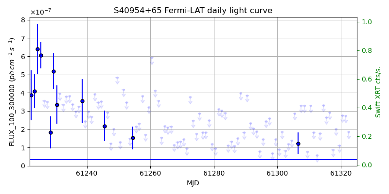
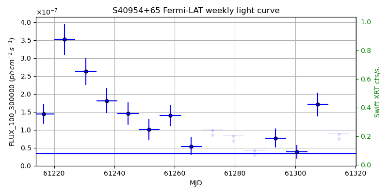
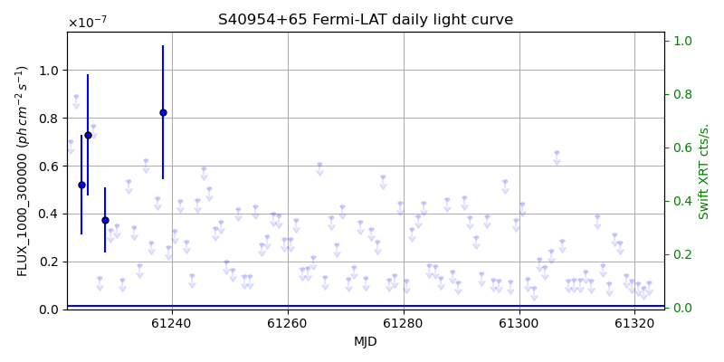
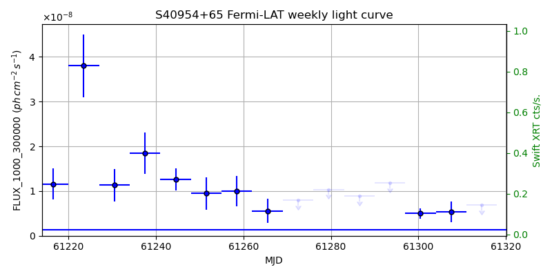

LAT Lightcurve site: https://fermi.gsfc.nasa.gov/ssc/data/access/lat/msl_lc/source/S4_0954p65
Swift site: https://www.swift.psu.edu/monitoring/source.php?source=0954+658
NED: Query
Time of last update of this page: UT: 2026-10-10 15:21 (MJD: 61323.640)
| Property | Value |
|---|---|
| R.A. | 9:58:47.28 |
| Dec. | 65:33:54.0 |
| z | 0.369 |
| 3FGL SpectrumType | PowerLaw |
| 3FGL PL Index | 2.38 |
| 3FGL Flux_100_300000 | 3.33e-08 1 / (s cm2) |
| 3FGL Flux_1000_300000 | 1.38e-09 1 / (s cm2) |
| 3FGL Flux >200 GeV | 9.14e-13 1 / (s cm2) |
| 3FGL Extrap. Crab >200 GeV | 0.00 |
| 3FGL Flux After EBL Absorption >200GeV | 2.40e-13 1 / (s cm2) |
| 3FGL EBL Crab Fraction >200GeV | 0.00 |

| MJD | dMJD | Flux | dFlux | Frac3FGL | FracCrab>200GeV | EBLFracCrab>200GeV |
|---|---|---|---|---|---|---|
| 61318.50 | 0.50 | 2.02e-07 | 0.00e+00 | 0.00 | 0.00 | 0.00 |
| 61319.50 | 0.50 | 1.11e-07 | 0.00e+00 | 0.00 | 0.00 | 0.00 |
| 61320.50 | 0.50 | 2.76e-07 | 0.00e+00 | 0.00 | 0.00 | 0.00 |
| 61321.50 | 0.50 | 2.73e-07 | 0.00e+00 | 0.00 | 0.00 | 0.00 |
| 61322.50 | 0.50 | 1.86e-07 | 0.00e+00 | 0.00 | 0.00 | 0.00 |

| MJD | dMJD | Flux | dFlux | Frac3FGL | FracCrab>200GeV | EBLFracCrab>200GeV |
|---|---|---|---|---|---|---|
| 61286.50 | 3.50 | 4.33e-08 | 0.00e+00 | 0.00 | 0.00 | 0.00 |
| 61293.50 | 3.50 | 7.73e-08 | 2.59e-08 | 2.32 | 0.01 | 0.00 |
| 61300.50 | 3.50 | 3.93e-08 | 1.88e-08 | 1.18 | 0.00 | 0.00 |
| 61307.50 | 3.50 | 1.71e-07 | 3.32e-08 | 5.13 | 0.02 | 0.01 |
| 61314.50 | 3.50 | 8.90e-08 | 0.00e+00 | 0.00 | 0.00 | 0.00 |

| MJD | dMJD | Flux | dFlux | Frac3FGL | FracCrab>200GeV | EBLFracCrab>200GeV |
|---|---|---|---|---|---|---|
| 61318.50 | 0.50 | 1.43e-08 | 0.00e+00 | 0.00 | 0.00 | 0.00 |
| 61319.50 | 0.50 | 1.18e-08 | 0.00e+00 | 0.00 | 0.00 | 0.00 |
| 61320.50 | 0.50 | 1.09e-08 | 0.00e+00 | 0.00 | 0.00 | 0.00 |
| 61321.50 | 0.50 | 9.05e-09 | 0.00e+00 | 0.00 | 0.00 | 0.00 |
| 61322.50 | 0.50 | 1.11e-08 | 0.00e+00 | 0.00 | 0.00 | 0.00 |

| MJD | dMJD | Flux | dFlux | Frac3FGL | FracCrab>200GeV | EBLFracCrab>200GeV |
|---|---|---|---|---|---|---|
| 61286.50 | 3.50 | 8.89e-09 | 0.00e+00 | 0.00 | 0.00 | 0.00 |
| 61293.50 | 3.50 | 1.18e-08 | 0.00e+00 | 0.00 | 0.00 | 0.00 |
| 61300.50 | 3.50 | 4.98e-09 | 1.13e-09 | 3.61 | 0.01 | 0.00 |
| 61307.50 | 3.50 | 5.40e-09 | 2.32e-09 | 3.91 | 0.02 | 0.01 |
| 61314.50 | 3.50 | 6.82e-09 | 0.00e+00 | 0.00 | 0.00 | 0.00 |
--------------------------------------------------------- Using user-supplied coords: 9:58:47.28 65:33:54.0 2000 --------------------------------------------------------- FLWO UT night of: 2026-10-11 Local Sid. @ Midnight: 00:55 Sunset (-15.0) (local, UT): 19:04 02:04 Sunrise (-15.0) (local, UT): 05:18 12:18 Moonrise (local, UT): Moonset (local, UT): Moon phase: 0.01 --------------------------------------------------------- AzTime LSID UT Obj_el Obj_az Mn_el Mn_az Sep. --------------------------------------------------------- 19:04 19:58 02:04 10.0 347.6 -16.1 264.2 86.5 19:34 20:29 02:34 8.8 350.6 -22.3 267.8 86.7 20:04 20:59 03:04 8.0 353.6 -28.5 271.5 86.9 20:34 21:29 03:34 7.4 356.7 -34.7 275.4 87.1 21:04 21:59 04:04 7.2 359.8 -40.8 279.7 87.3 21:34 22:29 04:34 7.4 3.0 -46.8 284.6 87.4 22:04 22:59 05:04 7.9 6.1 -52.7 290.5 87.6 22:34 23:29 05:34 8.7 9.1 -58.4 297.7 87.8 23:04 23:59 06:04 9.9 12.1 -63.6 307.3 88.0 23:34 00:29 06:34 11.4 14.9 -68.1 320.3 88.2 00:04 00:59 07:04 13.1 17.5 -71.3 338.2 88.4 00:34 01:29 07:34 15.2 19.9 -72.6 0.4 88.7 01:04 01:59 08:04 17.5 22.1 -71.5 22.7 88.9 01:34 02:30 08:34 20.0 24.1 -68.3 40.8 89.1 02:04 03:00 09:04 22.7 25.8 -63.9 54.1 89.3 02:34 03:30 09:34 25.5 27.2 -58.7 63.8 89.5 03:04 04:00 10:04 28.5 28.2 -53.1 71.2 89.8 03:34 04:30 10:34 31.6 28.9 -47.3 77.2 90.0 04:04 05:00 11:04 34.7 29.2 -41.4 82.2 90.2 04:34 05:30 11:34 37.8 29.1 -35.3 86.6 90.4 05:04 06:00 12:04 40.9 28.4 -29.2 90.6 90.7 05:18 06:14 12:18 42.2 28.0 -26.5 92.4 90.8 --------------------------------------------------------- Dark hours >55 deg.: 0.00